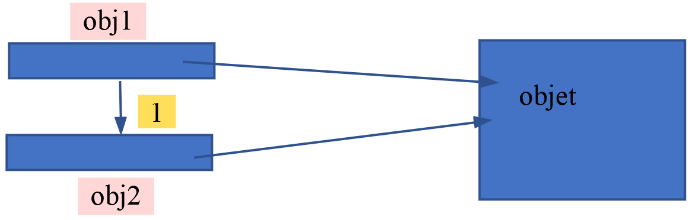
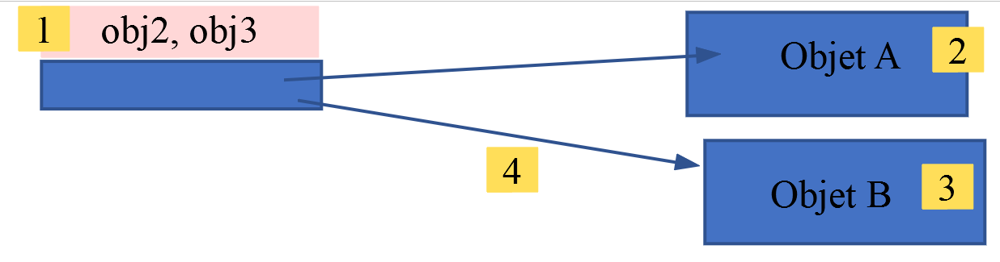

5. Les classes
Vocabulaire : une classe (mot clé [class]) est un type PHP. Une variable de ce type est appelée objet. Un objet est une instance (un exemplaire) de classe.
C'est dans ce chapitre que l'évolution de PHP entre les versions 7 et 8 est la plus visible. PHP 8 a apporté une série de nouveautés qui rendent l'écriture des classes plus concise et plus sûre : attributs typés, promotion des paramètres du constructeur, attributs en lecture seule ([readonly]), énumérations ([enum]), crochets de propriétés (property hooks) et visibilité asymétrique (PHP 8.4), clonage avec modification (PHP 8.5)... Nous les introduisons au fil des exemples, en gardant la progression du cours PHP 7 : on part de la classe la plus rudimentaire pour arriver à la classe écrite selon les bonnes pratiques actuelles.
5.1. L'arborescence des scripts
Les scripts de ce chapitre sont dans le dossier [scripts-console/classes] :
Comme dans les chapitres précédents, un script console est exécuté dans un terminal de [VS Code] ouvert dans le dossier du script, avec la commande [php nom-du-script.php].
5.2. Toute variable peut-elle devenir un objet doté d'attributs ?
En PHP 7, on pouvait écrire [$obj1->attr1 = "un";] sur une variable [$obj1] inexistante : PHP créait alors silencieusement (avec un simple avertissement) un objet de type [stdClass] doté de l'attribut [attr1]. Ce n'est plus possible en PHP 8. Le script [classes-01.php] est le suivant :
Résultats :
Commentaires
- lignes 7-9 : en PHP 8, la variable [$obj0] n'existe pas et l'opération [$obj0->attr1 = "un"] lance une erreur de type [\Error] (ligne 2 des résultats) au lieu de créer un objet. Nous étudierons la structure [try / catch] au chapitre sur les exceptions. Retenons pour l'instant qu'elle permet d'intercepter l'erreur et de continuer l'exécution du script ;
- ligne 13 : un objet générique doit être créé explicitement avec l'opérateur [new]. La classe prédéfinie [stdClass] est une classe vide ;
- lignes 15-16 : la notation [$obj->attr] désigne l'attribut [attr] de l'objet [$obj]. S'il n'existe pas, il est créé : on dit que c'est un attribut dynamique. La classe [stdClass] est faite pour cela : on peut lui ajouter autant d'attributs que l'on veut ;
- ligne 25 : l'expression [$obj2 = $obj1], lorsque [$obj1] est un objet, est une copie de références : [$obj2] et [$obj1] sont des références (adresses) sur un même objet. L'objet lui-même peut être modifié par l'une ou l'autre des références ;
- lignes 27-30 : visent à montrer que [$obj1] et [$obj2] sont deux variables différentes qui pointent sur le même objet. [$obj2 = $obj1] a copié la valeur de [$obj1] dans la variable [$obj2] (opération 1 ci-dessous). La valeur de [$obj1] est l'adresse d'un objet. Ainsi [$obj1] et [$obj2] pointent sur le même objet. Lorsqu'on manipule une variable [$obj] qui pointe sur un objet, PHP manipule l'objet pointé. D'après le schéma ci-dessous, on voit qu'on peut modifier l'objet pointé soit via [$obj1] soit via [$obj2]. C'est ce que montrent les lignes 5 et 6 des résultats ;

- ligne 39 : l'expression [$obj3 = &$obj2] fait que [$obj2] et [$obj3] sont à la même adresse [1 ci-dessous]. On pourrait dire que les deux variables sont des alias du même emplacement mémoire. Elles pointent toutes les deux sur un objet, Objet A ci-dessous [2] ;
- ligne 50 : l'opération [$obj2 = new \stdClass()] crée un nouvel objet, Objet B [3 ci-dessous], et l'adresse de ce nouvel objet est affectée à la variable [$obj2] [4]. Puisque [$obj2] et [$obj3] sont deux alias du même emplacement mémoire, [$obj3] pointe également sur le nouvel objet Objet B. C'est ce que montrent les lignes 31-42 des résultats ;

- ligne 61 : un objet est-il un dictionnaire ? En PHP 7, la fonction [count] acceptait un objet (avec un avertissement) et rendait 1, ce qui n'avait pas de sens. En PHP 8, elle lance une erreur [TypeError] : [count] n'accepte que des tableaux ou des objets implémentant l'interface [Countable] (ligne 43 des résultats) ;
- ligne 66 : la fonction [get_object_vars] rend les attributs d'un objet sous la forme d'un tableau associatif. Son nombre d'éléments est le nombre d'attributs de l'objet ;
- lignes 68-69 : un objet peut être parcouru avec [foreach], comme un dictionnaire. Les clés sont les noms des attributs et les valeurs, les valeurs de ces mêmes attributs. Donc un objet présente des similitudes avec un dictionnaire mais n'en est pas un. En PHP 7, ce parcours était fait avec la fonction [each], aujourd'hui supprimée ;
- lignes 72-74 : l'opérateur de conversion [(object)] transforme un tableau associatif en objet [stdClass] et l'opérateur [(array)] fait l'inverse.
5.3. Une classe Personne sans attributs déclarés
En PHP 7, une classe pouvait utiliser des attributs qu'elle n'avait pas déclarés : il suffisait d'écrire [$p->prenom = "Paul";] pour créer l'attribut [prenom] dans l'objet [$p], comme on le fait avec [stdClass]. Ces attributs dynamiques sur les objets d'une classe ordinaire sont dépréciés depuis PHP 8.2 : chaque création d'un tel attribut produit le message « Deprecated: Creation of dynamic property Personne::$prenom is deprecated ». Ils disparaîtront dans une version future de PHP. La raison est simple : une faute de frappe dans le nom d'un attribut ([$p->prenon = "Paul"]) créait silencieusement un nouvel attribut au lieu de signaler l'erreur.
Il existe trois exceptions à cette règle :
- la classe [stdClass], que nous venons d'utiliser, accepte toujours les attributs dynamiques ;
- une classe précédée de l'attribut [#[\AllowDynamicProperties]] les accepte également. Cet attribut a été prévu pour faciliter la migration de code ancien. Nous ne l'utiliserons pas dans ce cours ;
- une classe qui définit les méthodes magiques [__get] et [__set] décide elle-même de ce qu'il faut faire d'un attribut non déclaré.
C'est cette troisième solution que présente le script [classes-02.php] :
Résultats :
Commentaires
- lignes 6-38 : définissent une classe [Personne]. Une classe est un moule à partir duquel on crée des objets. Elle regroupe des attributs et des fonctions appelées méthodes ;
- ligne 10 : le seul attribut déclaré de la classe est un tableau privé (nous verrons bientôt le sens du mot clé [private]). C'est lui qui va mémoriser les attributs « non déclarés » ;
- lignes 13-16 : la méthode magique [__set] est appelée automatiquement par PHP lorsqu'on écrit dans un attribut qui n'existe pas (ou qui n'est pas accessible). Elle reçoit le nom de l'attribut et la valeur à lui affecter. Ici, elle range cette valeur dans le tableau [$attributs]. Les méthodes dont le nom commence par deux soulignés sont appelées méthodes magiques : on ne les appelle pas explicitement, c'est PHP qui les appelle ;
- lignes 19-22 : la méthode magique [__get] est appelée lorsqu'on lit un attribut qui n'existe pas. Elle rend la valeur mémorisée ou [null]. L'opérateur [??] rend son opérande gauche s'il existe et n'est pas [null], sinon son opérande droit ;
- ligne 25 : la méthode magique [__isset] est appelée par la fonction [isset] ;
- ligne 31 : la méthode [identite] utilise trois attributs non déclarés dans la classe. Le mot clé [$this] désigne l'objet auquel on applique la méthode. Chaque lecture [$this->prenom] provoque un appel à [__get] ;
- ligne 40 : on crée un objet [$p] de type [Personne]. Le mot clé [new] sert à créer un nouvel objet. L'opération rend une référence sur l'objet créé (donc une adresse). Diverses écritures sont possibles : [new Personne()], [new Personne], [new personne]. Le nom de la classe est insensible à la casse ;
- lignes 41-43 : les trois attributs nécessaires à la méthode [identite] sont créés dans l'objet [$p] par la méthode [__set] ;
- ligne 45 : la méthode [identite] de la classe [Personne] est appliquée sur l'objet [$p]. Dans le code de la méthode [identite], [$this] référence le même objet que [$p] .
Cette technique a ses usages (objets de configuration, encapsulation de données lues dans un fichier) mais ce n'est pas la façon normale d'écrire une classe. Dans une classe ordinaire, on déclare ses attributs.
5.4. La classe Personne avec attributs déclarés
Le script [classes-03.php] est le suivant :
Résultats :
Commentaires
- lignes 9-11 : les attributs de la classe sont explicitement déclarés. Le mot clé [public] signifie qu'ils sont accessibles de l'extérieur de la classe. En PHP 7, le cours utilisait le mot clé [var], hérité de PHP 4, qui est un synonyme de [public] et qu'on n'utilise plus aujourd'hui ;
- chaque attribut est précédé de son type : [string] pour le prénom et le nom, [int] pour l'âge. Ce sont des attributs typés, apparus avec PHP 7.4. Les types possibles sont ceux des paramètres de fonctions : [int], [float], [string], [bool], [array], un nom de classe ou d'interface, un type nullable [?string], un type union [int|float]... ;
- ligne 30 : un attribut typé n'accepte que des valeurs de son type. Toute autre valeur provoque une erreur [TypeError] (ligne 3 des résultats) ;
- lignes 35-37 : un attribut typé sans valeur par défaut est dans l'état « non initialisé » tant qu'on ne lui a rien affecté. Le lire provoque une erreur (ligne 4 des résultats). Les attributs non typés, eux, valent [null] par défaut. C'est une première raison d'initialiser tous les attributs d'un objet dès sa création : c'est le rôle du constructeur.
5.5. La classe Personne avec un constructeur
Les exemples précédents montraient des classes [Personne] exotiques telles qu'on pouvait les trouver dans PHP 4. Il n'est pas conseillé de suivre ces exemples. Nous présentons maintenant une classe [Personne] [classes-04.php] correspondant aux bonnes pratiques classiques, que l'on retrouve dans tous les langages objet (Java, C#...) :
Résultats :
Commentaires
- ligne 4 : on demande à ce que les types déclarés des paramètres des fonctions soient strictement respectés. Sans cette déclaration, PHP essaierait de convertir une valeur d'un mauvais type (par exemple la chaîne ["48"] en entier [48]) ;
- lignes 6-60 : la classe [Personne] ;
- lignes 9-11 : les attributs privés ([private]) de la classe. Ces attributs ne sont visibles qu'à l'intérieur de la classe. Les autres mots clés utilisables sont :
- [public] : fait de l'attribut un attribut public visible de l'extérieur de la classe ;
- [protected] : fait de l'attribut un attribut protégé visible de l'intérieur de la classe et des classes dérivées de celle-ci ;
- parce que les attributs sont privés, on ne peut y accéder de l'extérieur de la classe. On ne peut donc pas écrire [$p->nom = "Landru"] : on est en-dehors de la classe [Personne] et l'attribut [nom] est privé. Les lignes 72-74 le vérifient : la lecture de [$p->nom] provoque une erreur (ligne 5 des résultats). Pour initialiser les attributs privés de l'objet [$p], il y a deux moyens :
- utiliser les méthodes publiques [set] et [get] (le nom de ces méthodes peut être quelconque) des lignes 14-39. On écrira alors : [$p->setNom("Landru")] ;
- utiliser le constructeur des lignes 45-50. On écrira alors : [$p = new Personne("Michel", "Landru", 44)]. Cette écriture appelle automatiquement la méthode de la classe [Personne] appelée [__construct] ;
- ligne 64 : cette ligne affiche la personne [$p] sous la forme d'une chaîne de caractères. Pour ce faire, la méthode de la classe [Personne] appelée [__toString] (ligne 54) est utilisée ;
- ligne 70 : depuis PHP 8.0, toute classe qui définit une méthode [__toString] implémente automatiquement l'interface prédéfinie [Stringable] (nous étudierons les interfaces au chapitre suivant). L'opérateur [instanceof] teste si un objet est d'un type donné. Une fonction peut ainsi déclarer un paramètre de type [string|Stringable] : elle accepte alors une chaîne ou tout objet convertible en chaîne ;
- toutes les méthodes de la classe ont été préfixées par le mot clé [public] qui indique que la méthode est visible en-dehors de la classe. Les autres mots clés utilisables sont, comme pour les attributs et avec la même signification, [private] et [protected]. Sans mot clé explicite de visibilité, la méthode est implicitement [public]. Les règles de style PSR-12, que suivent les scripts de ce cours, demandent d'écrire toujours la visibilité explicitement.
5.6. La promotion des paramètres du constructeur
La classe précédente est verbeuse : chaque attribut est nommé quatre fois (déclaration, paramètre du constructeur, affectation dans le constructeur, getter). Depuis PHP 8.0, la promotion des paramètres du constructeur permet de déclarer et d'initialiser un attribut directement dans la liste des paramètres du constructeur. Le script [classes-22.php] le montre :
Résultats :
Commentaires
- lignes 10-14 : chaque paramètre du constructeur précédé d'un mot clé de visibilité ([private], [protected], [public]) est « promu » : PHP déclare un attribut de même nom et de même type et lui affecte la valeur du paramètre. Ces trois lignes remplacent les déclarations d'attributs et les affectations de la classe précédente ;
- ligne 13 : un paramètre promu peut avoir une valeur par défaut. La virgule après le dernier paramètre est autorisée depuis PHP 8.0 : elle facilite l'ajout ultérieur d'un paramètre ;
- ligne 15 : le corps du constructeur peut contenir du code (des vérifications par exemple). Ici, il n'y a rien à faire ;
- ligne 52 : les arguments nommés (PHP 8.0) permettent de passer les arguments dans un ordre quelconque, en les désignant par le nom du paramètre. Le code est plus lisible, surtout lorsqu'une fonction a beaucoup de paramètres ;
- ligne 55 : le paramètre [age] est omis : il prend sa valeur par défaut ;
- ligne 58 : la fonction [var_dump] montre que les attributs promus sont de vrais attributs privés de la classe (lignes 5-12 des résultats).
5.7. La classe Personne avec contrôles de validité dans le constructeur
Le constructeur d'une classe est le bon endroit pour vérifier que les valeurs d'initialisation de l'objet sont correctes. Mais un objet peut être également initialisé par ses méthodes [set] ou équivalentes. Pour éviter de mettre à deux endroits différents les mêmes vérifications, on pourra mettre ces dernières dans les méthodes [set]. Si une valeur d'initialisation d'un objet se révèle incorrecte, on lancera une exception. Voici un exemple.
On déplace tout d'abord la définition de la classe [Personne] dans son propre fichier [Personne.php] :
Commentaires
- ligne 4 : on demande à ce que le type des paramètres des fonctions soit respecté lorsqu'il est déclaré ;
- ligne 7 : définit un espace de noms (namespace). Le nom complet (on dit qualifié) de la classe [Personne] est alors [\Exemples\Personne]. Notez le caractère [\] commençant le nom qualifié : on a alors un nom qualifié absolu. Si ce caractère est absent, on a un nom qualifié relatif (relatif à l'espace de noms courant). Ainsi si deux classes A et B font partie du même espace de noms E, dans le code de la classe A on pourra atteindre la classe B par la notation relative B. Si la classe A fait partie de l'espace de noms E1 et B de l'espace de noms E2, dans le code de A, B sera atteint par la notation absolue [\E2\B]. Définir une classe à l'intérieur d'un espace de noms n'est pas obligatoire mais c'est une bonne pratique : deux bibliothèques peuvent alors définir chacune une classe [Personne] sans conflit ;
- les espaces de noms correspondent souvent à l'arborescence des fichiers. Ainsi la classe A d'un espace de noms E1 est souvent dans un fichier [E1/A.php]. C'est la convention PSR-4 utilisée par l'outil [Composer] pour charger automatiquement les classes, que nous utiliserons dans des chapitres ultérieurs. L'extension [PHP Intelephense] de [VS Code] ne l'impose pas. Il ne faut pas confondre arborescence et espace de noms : le nom pleinement qualifié d'une classe utilise un espace de noms et n'a rien à voir avec l'arborescence du fichier PHP de la classe. Ici, la classe [\Exemples\Personne] est dans le fichier [scripts-console/classes/Personne.php] ;
- lignes 13-15 : les trois attributs privés de la classe ;
- lignes 33-41 : initialisation de l'attribut [prenom] et vérification de la valeur d'initialisation ;
- ligne 36 : la fonction [trim($chaine)] élimine les espaces qui se trouvent en début et fin de [$chaine]. Ainsi [trim(" abcd ")] est la chaîne ["abcd"] et [trim(" ")] est la chaîne vide. On notera qu'un nom de variable peut contenir des caractères accentués ;
- ligne 37 : si le prénom est vide, alors on lance une exception (ligne 38) sinon le prénom est mémorisé (ligne 40). Pour lancer une exception on a utilisé ici la classe prédéfinie [Exception]. On est obligé ici d'utiliser son nom absolu [\Exception]. Si on utilise son nom relatif [Exception] alors cette classe sera cherchée dans l'espace de noms du moment, c.-à-d. l'espace de noms [Exemples] de la classe [Personne]. Ainsi l'interpréteur PHP cherchera une classe de nom absolu [\Exemples\Exception] qui n'existe pas ;
- lignes 63-69 : le constructeur passe par les méthodes [set] pour initialiser les attributs : les vérifications ne sont écrites qu'une fois ;
- les méthodes ligne 72 et ligne 79 sont présentées au paragraphe suivant.
La classe [Personne] est utilisée par le script [classes-05.php] suivant :
Résultats :
Commentaires
- ligne 7 : le script va utiliser la classe [Personne]. Il faut alors dire à l'interpréteur PHP où il peut trouver la définition de cette classe. C'est le rôle des instructions [include fichier] et [require fichier]. La différence entre les deux instructions est la suivante : si l'instruction [include fichier] rencontre des erreurs lors du chargement de [fichier] une erreur de niveau [E_WARNING] est émise mais l'exécution continue alors que [require] dans le même cas génère une erreur fatale et l'exécution du script s'arrête. Chacune des deux instructions a une variante [include_once] et [require_once]. Ces deux variantes permettent de gérer le cas des inclusions multiples d'un même fichier. On peut imaginer ici un projet constitué de plusieurs scripts PHP dont plusieurs référencent la classe [Personne]. Leur exécution va alors provoquer plusieurs fois l'inclusion du fichier [Personne.php] et provoquer une erreur car une classe ne peut être définie deux fois. La solution est d'utiliser les variantes [_once] qui assurent que le fichier ne sera inclus qu'une fois dans le script global du projet ;
- la constante [__DIR__] est une constante PHP qui désigne le nom complet du dossier dans lequel se trouve le script contenant la constante [__DIR__]. La ligne 9 l'affiche (ligne 2 des résultats). Sur la machine du lecteur, on obtiendra quelque chose comme [C:\laragon\www\php8-oct-2026\scripts-console\classes/Personne.php]. Dans le chemin d'un fichier, on peut utiliser indifféremment les signes [/] et [\] sous Windows. Utiliser [__DIR__] rend le script indépendant du dossier courant au moment de son exécution ;
- ligne 12 : le script [classes-05.php] n'a pas d'espace de noms. Lorsque le code utilise le nom relatif [Personne], celui-ci est cherché dans l'espace de noms racine [\] et ne sera donc pas trouvé. Il y a deux solutions à ce problème :
- utiliser le nom complet de la classe [\Exemples\Personne] ;
- utiliser l'instruction [use] qui indique que, dans le code qui suit, le nom [Personne] désigne la classe [\Exemples\Personne]. Dans une instruction [use], le nom est toujours absolu : le [\] initial est inutile (c'est l'écriture recommandée). L'instruction est équivalente à [use Exemples\Personne as Personne;] qui dit que l'alias [Personne] désigne la classe [\Exemples\Personne] ;
- l'instruction [use] permet à l'interpréteur de savoir que la classe [Personne] est en réalité la classe [\Exemples\Personne]. Ceci dit, où l'interpréteur va-t-il trouver le code de cette classe ? C'est l'instruction [require_once] qui le lui dit. Les deux instructions ont des rôles bien différents : [use] travaille sur les noms, [require_once] charge un fichier ;
- ligne 16 : un objet [Personne] est créé. C'est la méthode [__construct] de la classe [Personne] qui va être ici implicitement exécutée ;
- ligne 18 : fait afficher la personne [$p]. Pour être affichée, la valeur de la variable [$p] doit être transformée en chaîne de caractères. Implicitement c'est la méthode [Personne::__toString] qui est alors exécutée. Celle-ci doit donc rendre une chaîne de caractères ;
- nous avons vu que le constructeur de la classe [Personne] pouvait lancer une exception de type [\Exception]. Il faut donc gérer celle-ci. Aussi la création d'une personne devrait-elle toujours être entourée d'une structure [try / catch] comme dans les lignes 20-34. Ici on produit volontairement une erreur en passant un âge qui n'est pas un entier. Dans ce cas particulier l'erreur est lancée par l'interpréteur PHP et non par le code de la classe [Personne]. En effet, la signature de la méthode [Personne::__construct] est [__construct(string $prenom, string $nom, int $age)]. Il faut donc que le paramètre [age] passé au constructeur soit de type entier. Si ce n'est pas le cas, l'interpréteur PHP lance une erreur de type [TypeError]. Par ailleurs, les méthodes [set] de la classe [Personne] lancent, elles, une exception de type [\Exception]. Comme le constructeur qui les appelle n'a pas de structure [try / catch], l'exception remonte d'un niveau, au code qui a appelé le constructeur, c.-à-d. le code du script [classes-05.php]. Finalement, le script [classes-05.php] peut recevoir deux types d'erreur : [\Exception] ou [\TypeError]. Pour cette raison, la structure [try] a deux clauses [catch] pour gérer séparément les deux types d'erreur. Lorsque le développeur est sûr que certaines erreurs ne peuvent se produire, il n'utilisera pas les clauses [catch] correspondantes. Ici elles sont systématiquement utilisées par unique souci de démonstration ;
- ligne 22 : on peut écrire indifféremment [Exception] ou [\Exception]. La première version utilise le nom relatif de la classe, relatif à l'espace de noms du script. Celui-ci n'en a pas. Son espace de noms est alors la racine des espaces de noms : [\]. Donc écrire ici [Exception] revient à écrire [\Exception]. Il est préférable d'utiliser le nom absolu des classes prédéfinies de PHP dans un script n'ayant pas d'espace de noms lui-même. Ainsi si on décide de donner un espace de noms à ce script, l'écriture des noms absolus de classes reste valide alors que dans l'autre cas, le changement d'espace de noms va provoquer des erreurs sur les noms relatifs des classes ;
- ligne 23 : lorsqu'il y a exception, la méthode [Exception::getMessage] permet d'obtenir le message d'erreur de l'exception. Il en est de même pour une erreur de type [TypeError]. Dans la méthode [Personne::setPrenom], on a écrit [throw new \Exception("Le prénom doit être non vide")]. C'est ce message que récupère la méthode [getMessage] dans l'exemple 3 (ligne 5 des résultats) ;
- ligne 4 des résultats : le message de l'erreur [TypeError]. Depuis PHP 8.0, il désigne le paramètre fautif par son numéro et par son nom : « Argument #3 ($age) must be of type int, string given ». Les messages d'erreur de PHP 8 sont plus précis que ceux de PHP 7.
5.8. Ajout d'une méthode faisant office de second constructeur
En PHP, il n'est pas possible d'avoir plusieurs constructeurs avec des paramètres différents qui permettraient de construire un objet de diverses façons. On peut alors utiliser des méthodes faisant office de constructeur. La classe [Personne] en a deux :
Commentaires
- lignes 72-76 : la méthode [initWithPersonne] permet d'affecter à l'objet courant les valeurs des attributs d'un autre objet [Personne]. Ici, elle fait appel au constructeur [__construct] mais ce n'est pas obligatoire. Elle pourrait initialiser elle-même les attributs de la classe [Personne]. On remarquera qu'une méthode de la classe [Personne] a accès aux attributs privés de tous les objets [Personne], pas seulement à ceux de [$this] ;
- lignes 79-83 : la méthode [fromPersonne] est une autre façon de faire, plus courante aujourd'hui. C'est une méthode statique (mot clé [static]) : elle ne s'applique pas à un objet mais à la classe. On l'appelle avec la notation [Personne::fromPersonne($p)]. Elle crée un nouvel objet avec [new self(...)] : le mot clé [self] désigne la classe dans laquelle le code est écrit, ici [Personne]. Le type de retour [self] indique que la méthode rend un objet de cette classe. Une telle méthode est appelée constructeur nommé ou méthode de fabrication (factory). Nous reviendrons sur les méthodes statiques un peu plus loin.
La nouvelle classe [Personne] est utilisée par le script [classes-06.php] suivant :
Résultats :
Commentaires
- ligne 17, ligne 26, ligne 33 : il est fréquent qu'après une exception, on doive arrêter l'exécution d'un script console si l'erreur rencontrée est irrécupérable. Ce n'est pas le cas dans un script web : on n'arrête pas l'exécution du script mais on fait afficher une page d'erreur. Si on est dans une fonction, ce n'est pas l'instruction [exit] qui sera utilisée mais [return] : on n'arrête pas l'exécution du script ([exit]) mais on sort de la fonction ([return]) après avoir positionné une erreur ;
- ligne 39 : appel du constructeur nommé ;
- ligne 42 : l'opérateur [===] appliqué à deux objets rend vrai s'il s'agit du même objet (même adresse). [$p3] et [$p2] sont deux objets distincts (ligne 5 des résultats) ;
- ligne 43 : l'opérateur [==] appliqué à deux objets de la même classe rend vrai si leurs attributs ont les mêmes valeurs (ligne 6 des résultats). La fonction [var_export] rend une représentation PHP de son paramètre, ici [true] ou [false].
5.9. Contrôles de validité avec les crochets de propriétés (PHP 8.4)
La classe [Personne] précédente protège ses attributs en les rendant privés et en obligeant le code extérieur à passer par des méthodes [get] et [set]. PHP 8.4 propose une autre solution : les crochets de propriétés (property hooks). Un attribut public peut être accompagné d'un crochet [set], du code exécuté à chaque écriture de l'attribut, et d'un crochet [get], du code exécuté à chaque lecture. On garde ainsi la simplicité d'écriture [$p->age = 49] tout en conservant le contrôle des valeurs. C'est ce que montre le script [classes-23.php] :
Résultats :
Commentaires
- lignes 9-17 : l'attribut public [prenom] est suivi d'un bloc entre accolades qui contient ses crochets. Ici, il n'y a qu'un crochet [set] ;
- ligne 10 : le crochet [set] reçoit la valeur que l'on veut affecter à l'attribut. Il la nettoie avec [trim], la vérifie et lance une exception si elle est incorrecte ;
- ligne 15 : à l'intérieur de ses crochets, [$this->prenom] désigne l'emplacement mémoire de l'attribut : on y range la valeur. Partout ailleurs, [$this->prenom] passe par les crochets ;
- ligne 13 : on lance une exception de type [\InvalidArgumentException], classe prédéfinie dérivée de [\Exception] et plus précise qu'elle : elle signale un argument invalide. Nous présenterons les exceptions prédéfinies de PHP dans le chapitre sur les exceptions ;
- ligne 31 : lorsque le crochet [set] ne déclare pas de paramètre, la valeur reçue est disponible dans la variable implicite [$value] et son type est celui de l'attribut ;
- lignes 40-42 : un attribut qui n'a qu'un crochet [get] et qui ne fait jamais référence à son propre emplacement mémoire est un attribut virtuel : il est calculé à chaque lecture et n'occupe aucune place dans l'objet. La notation [get => expression] est un raccourci pour un crochet [get] qui rend la valeur de l'expression ;
- lignes 45-50 : le constructeur affecte les attributs : ces affectations passent par les crochets [set]. Les vérifications sont donc faites à la construction comme à toute modification ultérieure, sans méthodes [set] ;
- ligne 54 : le prénom [" Paul "] est nettoyé par le crochet [set] ;
- ligne 57 : l'attribut [age] est modifié directement, mais en passant par son crochet [set] ;
- lignes 60-66 : on essaie d'affecter des valeurs invalides. La notation [$p->$attribut] utilise le contenu de la variable [$attribut] comme nom d'attribut. Les crochets [set] lancent leurs exceptions (lignes 4-5 des résultats) ;
- ligne 69 : l'attribut virtuel [identite] n'a pas de crochet [set] : il est en lecture seule (ligne 6 des résultats) ;
- ligne 75 : l'objet a gardé des valeurs valides. [var_dump] ne montre que trois attributs : l'attribut virtuel [identite] n'existe pas en mémoire.
Les crochets de propriétés existent depuis longtemps dans d'autres langages (C#, Kotlin, Swift). Ils évitent d'écrire des getters et des setters « par précaution » : on commence avec un attribut public simple et on ajoute un crochet le jour où un contrôle devient nécessaire, sans changer le code qui utilise la classe.
5.10. La visibilité asymétrique (PHP 8.4)
Il arrive souvent qu'un attribut doive être lisible par tous mais modifiable seulement par la classe elle-même. On écrivait alors un attribut privé et un getter public. PHP 8.4 permet de donner une visibilité différente à la lecture et à l'écriture d'un attribut : c'est la visibilité asymétrique. Le script [classes-24.php] la met en œuvre avec un compte bancaire :
Résultats :
Commentaires
- ligne 9 : l'attribut [solde] est public en lecture ([public]) et privé en écriture ([private(set)]). Le code extérieur peut lire [$compte->solde] mais seules les méthodes de la classe peuvent le modifier. On peut aussi écrire [protected(set)] : les classes dérivées peuvent alors modifier l'attribut ;
- ligne 12 : la visibilité asymétrique est également possible pour un paramètre promu ;
- lignes 17-25 : les méthodes [deposer] et [retirer] sont les seuls moyens de modifier le solde. Elles vérifient la validité des opérations ;
- ligne 39 : les attributs sont lus directement, sans getter. La notation [{$expression}] à l'intérieur d'une chaîne entre guillemets permet d'y insérer une expression plus complexe qu'une simple variable ;
- ligne 42 : l'écriture du solde depuis l'extérieur de la classe provoque une erreur (ligne 3 des résultats). Le caractère [_] peut être utilisé comme séparateur de milliers dans un nombre littéral (PHP 7.4) ;
- ligne 48 : le retrait est refusé par la méthode [retirer] (ligne 4 des résultats). Le solde n'a pas changé (ligne 5).
5.11. Attributs et classes en lecture seule ([readonly])
Un objet dont l'état ne peut plus changer après sa construction est dit immuable. Les objets immuables simplifient beaucoup la programmation : on peut les partager entre plusieurs parties du code sans craindre qu'une de ces parties ne les modifie. PHP 8.1 a introduit les attributs en lecture seule (mot clé [readonly]) : un tel attribut ne peut être initialisé qu'une fois, depuis l'intérieur de la classe. PHP 8.2 a introduit les classes en lecture seule : tous leurs attributs sont alors [readonly]. Le script [classes-25.php] présente une classe [Personne] immuable :
Résultats :
Commentaires
- ligne 7 : la classe est déclarée [readonly] : ses trois attributs promus sont en lecture seule. Le mot clé [final], que nous étudierons bientôt, interdit de dériver la classe ;
- lignes 10-12 : les attributs sont publics : on peut les lire directement, sans getter. Ils ne peuvent pas être modifiés : un getter ne servirait à rien ;
- ligne 14 : le constructeur vérifie la validité de l'âge. Un objet immuable doit être valide dès sa construction puisqu'il ne changera plus ;
- lignes 20-24 : « modifier » un objet immuable consiste à créer une copie modifiée de cet objet. C'est ce que fait la méthode [avecAge]. Son type de retour [static] (PHP 8.0) signifie « un objet de la classe sur laquelle la méthode a été appelée ». La différence avec [self] n'apparaît qu'avec les classes dérivées : si une classe dérivée hérite de la méthode, le type [static] désigne la classe dérivée ;
- ligne 23 : l'opérateur [clone] crée une copie de l'objet [$this]. Depuis PHP 8.5, [clone] peut s'utiliser comme une fonction et recevoir en second paramètre un tableau d'attributs à modifier dans la copie (clone with). Avant PHP 8.5, il fallait passer par la méthode magique [__clone] ou reconstruire l'objet avec [new] ;
- ligne 37 : la modification d'un attribut [readonly] provoque une erreur (ligne 3 des résultats) ;
- ligne 43 : une classe [readonly] n'accepte pas non plus les attributs dynamiques : c'est une erreur et non un simple avertissement de dépréciation (ligne 4 des résultats) ;
- ligne 48 : [$p2] est une nouvelle personne ; [$p1] n'a pas changé (lignes 5-6 des résultats).
Dans les chapitres suivants, nous utiliserons souvent des classes [readonly] pour représenter des données (les données fiscales de l'administration, les résultats d'un calcul d'impôt...).
5.12. Un tableau d'objets [Personne]
L'exemple suivant [classes-07.php] montre qu'on peut avoir des tableaux d'objets :
Résultats :
Commentaires
- ligne 12 : création d'un tableau de 2 personnes ;
- ligne 15 : parcours du tableau ;
- ligne 16 : [$groupe[$i]] est un objet de type [Personne]. La méthode [Personne::__toString] est utilisée pour l'afficher.
5.13. Création d'une classe dérivée de la classe Personne
On crée dans un fichier [Enseignant.php] la classe [Enseignant] suivante :
Commentaires
- ligne 7 : la classe [Enseignant] fait partie elle aussi de l'espace de noms [Exemples] ;
- ligne 10 : la classe [Enseignant] dérive ([extends]) de la classe [Personne]. La classe dérivée [Enseignant] hérite des attributs et des méthodes de sa classe parent ;
- ligne 13 : la classe [Enseignant] ajoute un nouvel attribut [discipline] qui lui est propre ;
- ligne 27 : le constructeur de la classe [Enseignant] reçoit 4 paramètres :
- 3 pour initialiser sa classe parent (prénom, nom, âge), ligne 30 ;
- 1 pour sa propre initialisation (discipline), ligne 32 ;
- ligne 30 : la classe dérivée a accès aux méthodes et constructeurs de sa classe parent via le mot clé [parent::]. Ici on passe les paramètres (prénom, nom, âge) au constructeur de la classe parent ;
- ligne 36 : [#[\Override]] est un attribut PHP (PHP 8.3). Un attribut, écrit entre [#[] et []], est une information attachée à une classe, une méthode, un paramètre... que PHP ou d'autres outils peuvent exploiter. Celui-ci déclare que la méthode qui suit redéfinit une méthode de la classe parent. Si ce n'est pas le cas (faute de frappe dans le nom de la méthode, méthode supprimée de la classe parent...), PHP signale une erreur fatale. Nous en verrons un exemple un peu plus loin ;
- lignes 37-40 : la méthode [__toString] de la classe dérivée utilise la méthode [__toString] de la classe parent.
La classe [Enseignant] est utilisée par le script [classes-08.php] suivant :
Résultats :
Commentaires
- lignes 7-8 : il nous faut dire à l'interpréteur PHP où se trouvent les deux classes [Enseignant, Personne]. L'ordre est important : la classe parent [Personne] doit être connue au moment où la classe [Enseignant] est définie ;
- lignes 10-11 : déclaration des noms complets des deux classes. Ceci nous permettra de les désigner dans le code simplement par leur nom sans le préfixe de leur espace de noms ;
- ligne 16 : on crée un tableau comportant un objet de type [Enseignant] et un objet de type [Personne] ;
- lignes 19-21 : affichent les éléments du tableau ;
- ligne 20 : la méthode [__toString] de chaque élément [$groupe[$i]] va être appelée. La classe [Personne] a une méthode [__toString]. La classe [Enseignant] en a deux : celle de sa classe parent et la sienne propre. On peut se demander laquelle va être appelée. L'exécution montre que c'est celle de la classe [Enseignant] qui a été appelée. C'est toujours ainsi : lorsqu'une méthode est appelée sur un objet, celle-ci est cherchée dans l'ordre suivant : dans la classe de l'objet, dans sa classe parent s'il en a une, puis dans la classe parent de la classe parent, etc. La recherche s'arrête dès que la méthode a été trouvée.
5.14. Création d'une seconde classe dérivée de la classe Personne
L'exemple suivant crée une classe [Etudiant] dérivée de la classe [Personne], dans le fichier [Etudiant.php] :
Cette classe est utilisée par le script [classes-09.php] suivant :
Résultats :
Commentaires
- ligne 10 : une seule instruction [use] peut déclarer plusieurs classes d'un même espace de noms, en les regroupant entre accolades ;
- ligne 22 : le tableau est parcouru avec [foreach], qui donne à la fois l'indice [$i] et l'élément [$personne] ;
- ligne 23 : la notation [$objet::class] (PHP 8.0) rend le nom complet de la classe de l'objet. Elle remplace la fonction [get_class] dont l'utilisation sans paramètre est dépréciée depuis PHP 8.3.
5.15. Relation du constructeur d'une classe dérivée avec celui de la classe parent
Dans certains langages orientés objet, le constructeur d'une classe dérivée appelle automatiquement celui de sa classe parent. Le code suivant [classes-16.php] montre qu'avec PHP ce n'est pas le cas :
Résultats :
Commentaires
- lignes 15-23 : le constructeur de [Classe2] n'appelle pas celui de sa classe parent : celui-ci n'est pas exécuté (ligne 3 des résultats) ;
- ligne 31 : le constructeur de [Classe3] appelle explicitement celui de sa classe parent (lignes 5-6 des résultats) ;
- lignes 37-40 : la classe [Classe4] n'a pas de constructeur. Elle hérite alors de celui de sa classe parent qui est exécuté (ligne 8 des résultats).
5.16. Redéfinition d'une méthode de la classe parent
Nous avons déjà vu qu'une méthode de la classe parent pouvait être redéfinie dans une classe fille. Ainsi la méthode [__toString] de la classe [Personne] a été redéfinie dans les classes filles [Enseignant] et [Etudiant]. Le script [classes-13.php] illustre de nouveau le concept :
Résultats :
Commentaires
- lignes 7-18 : la classe [Classe1] définit deux méthodes f et g ;
- lignes 21-29 : la classe [Classe2] étend la classe [Classe1] et redéfinit la méthode f de celle-ci. L'attribut [#[\Override]] documente cette redéfinition ;
- ligne 32 : crée un objet [$c2] de type [Classe2] ;
- ligne 33 : appelle la méthode f de l'objet [$c2]. Comme celle-ci existe dans la classe [Classe2], elle est exécutée. Elle appelle elle-même la méthode f de la classe parent avec la notation [parent::f()] ;
- ligne 34 : appelle la méthode g de l'objet [$c2]. Comme celle-ci n'existe pas dans la classe [Classe2], elle est recherchée dans la classe parent où elle est trouvée et exécutée ;
- ligne 35 : crée un objet [$c1] de type [Classe1] ;
- ligne 36 : appelle la méthode f de l'objet [$c1]. C'est la méthode f de la classe [Classe1] qui est exécutée.
Voyons maintenant l'intérêt de l'attribut [#[\Override]]. Dans le script [classes-10.php], le développeur a voulu redéfinir la méthode f mais s'est trompé de nom :
Résultats :
Sans l'attribut [#[\Override]], la méthode [F2] serait simplement une nouvelle méthode de [Classe2] et le script afficherait [1] sans signaler la moindre anomalie : l'erreur passerait inaperçue. Avec l'attribut, PHP refuse la classe dès son chargement (ligne 3 des résultats). Dans la suite du cours, nous utiliserons systématiquement [#[\Override]] sur les méthodes redéfinies.
5.17. Passage d'un objet en paramètre d'une fonction
Considérons le script [classes-14.php] suivant :
Résultats :
Commentaires
- lignes 7-18 : la classe [Classe1] ;
- lignes 21-29 : une classe [Classe2] dérivée de [Classe1] ;
- ligne 32 : une fonction qui attend un paramètre de type [Classe1]. Lorsque le type attendu est une classe alors le paramètre effectif peut être un objet du type attendu ou dérivé ;
- ligne 41 : on appelle la fonction [doSomething] avec un paramètre de type [Classe2] alors que c'est le type [Classe1] qui est attendu. C'est accepté puisque [Classe2] dérive de [Classe1] (ligne 2 des résultats) ;
- ligne 44 : un objet [stdClass] n'est pas de type [Classe1] : l'appel provoque une erreur [TypeError] (ligne 3 des résultats).
5.18. Classes abstraites
Une classe abstraite est une classe incomplète qui ne peut être instanciée. Elle doit obligatoirement être dérivée pour être utilisable.
À quoi sert une classe abstraite ? On a parfois des classes qui partagent une ou des méthodes mais qui se différencient par d'autres méthodes ou d'autres attributs. Il est alors souhaitable de rassembler tout ce qui est commun dans une classe parent. Pour l'instant on n'a pas besoin de classe abstraite. Mais supposons que les classes filles ne diffèrent que par une méthode M : la signature de la méthode serait la même dans toutes les classes filles mais son implémentation différerait. Pour imposer aux classes filles d'implémenter la méthode M :
- on va déclarer la signature de la méthode M dans la classe parent. Comme celle-ci ne sait pas comment l'implémenter, on préfixe la méthode par le mot clé [abstract] : cela signifie que l'implémentation de la méthode M est reportée sur les classes filles ;
- parce que la classe parent n'est pas totalement implémentée, elle est elle aussi déclarée abstraite avec le même mot clé [abstract]. Ceci fait que la classe ne peut plus être instanciée. Il faut obligatoirement créer une classe fille qui définira l'implémentation de la méthode M, pour que le corps de la classe parent soit utilisable .
Voici un exemple [classes-15.php] :
Résultats :
Commentaires
- lignes 7-17 : la classe [Classe1] est abstraite car elle ne sait pas implémenter la méthode g de la ligne 16. Elle doit donc être obligatoirement dérivée pour être utilisable ;
- lignes 20-28 : la classe [Classe2] étend la classe [Classe1] et définit la méthode g de sa classe parent. L'attribut [#[\Override]] s'applique aussi à l'implémentation d'une méthode abstraite ;
- lignes 31-46 : la classe [Classe3] étend la classe [Classe1] et définit la méthode g de sa classe parent ;
- lignes 40-44 : la classe [Classe3] redéfinit également la méthode f de sa classe parent ;
- lignes 49-54 : on crée deux objets de type [Classe2] et [Classe3] et on appelle leurs méthodes f et g ;
- ligne 57 : une classe abstraite ne peut être instanciée : on obtient une erreur (ligne 6 des résultats).
5.19. Classes finales
Une classe finale est une classe qu'on ne peut dériver. Considérons le script [classes-11.php] suivant :
Résultats :
Commentaires
- ligne 10 : le mot clé [final] fait de la classe [Classe1] une classe finale qu'on ne peut dériver ;
- ligne 15 : la classe [Classe2] étend la classe finale [Classe1], ce qui est une erreur ;
- l'erreur est signalée dès que l'interpréteur PHP charge la définition de la classe [Classe2] : c'est une erreur fatale qui ne peut être interceptée par un [try / catch]. Le script n'est pas exécuté.
Déclarer une classe [final] est une bonne pratique lorsqu'elle n'a pas été conçue pour être dérivée : on évite ainsi que d'autres développeurs ne s'appuient sur des détails internes de la classe.
5.20. Méthodes finales
Une méthode finale est une méthode qu'on ne peut redéfinir par dérivation. Voici un exemple [classes-12.php] :
Résultats :
Commentaires
- ligne 13 : la méthode f de la classe [Classe1] est déclarée finale par le mot clé [final] ;
- ligne 20 : la classe [Classe2] étend la classe [Classe1] ;
- ligne 23 : on redéfinit la méthode f de la classe parent [Classe1]. Cela provoque une erreur fatale, signalée dès le chargement de la classe [Classe2].
5.21. Méthodes et attributs statiques
Une méthode statique est une méthode liée à la classe dans laquelle elle est définie et non aux objets instances de la classe. Ainsi si la classe C déclare une méthode statique M, pour utiliser cette dernière on écrira :
- [C::M] si on est à l'extérieur de la classe ;
- [self::M] si on est dans la classe .
Voici un exemple [classes-17.php] :
Résultats :
Commentaires
- ligne 9 : la méthode [say] est déclarée statique avec le mot clé [static] ;
- ligne 17 : à l'intérieur de la classe, la méthode statique [say] est appelée avec la notation [self::say] ;
- ligne 23 : appel de la méthode statique [say] avec la notation [Classe1::say] ;
- ligne 26 : la syntaxe des callables de première classe (first-class callable syntax, PHP 8.1) : écrire [(...)] à la place des arguments d'un appel ne fait pas l'appel mais rend la fonction elle-même, sous la forme d'un objet [Closure]. La variable [$dire] contient alors une fonction que l'on appelle comme une fonction ordinaire (ligne 27). La même syntaxe s'applique aux fonctions ([strlen(...)]) et aux méthodes d'un objet ([$p->identite(...)]) ;
- ligne 29 : une telle fonction peut être passée en paramètre à une autre fonction. La fonction [array_map] applique la fonction [$dire] à chacun des éléments du tableau (lignes 6-7 des résultats).
Considérons maintenant le code suivant [classes-18.php] :
Résultats :
Commentaires
- ligne 9 : on déclare un attribut statique qui va compter le nombre d'instances de la classe [Classe1] créées. Ce n'est pas un attribut qui peut appartenir à une instance de la classe. En effet, si deux objets O1 et O2 sont créés, aucun des deux n'a connaissance de l'autre. Avoir un compteur dans l'instance n'a pas de sens : lorsqu'un nouvel objet est créé, dans quelle instance va-t-on incrémenter un compteur ? Un attribut statique est un attribut de classe et non d'instance de la classe ;
- lignes 11-15 : c'est dans le constructeur qu'on va compter les objets créés puisque la création de chaque nouvel objet provoque l'exécution du constructeur ;
- ligne 14 : on notera la notation [self::$nbObjects] pour indiquer qu'on fait référence à un attribut statique de la classe dans laquelle se trouve le code exécuté ;
- lignes 18-21 : la méthode statique [say] a pour rôle d'afficher le nombre d'objets créés ;
- lignes 25-27 : on crée deux objets et on fait afficher le compteur d'objets.
5.22. Visibilité entre classe parent et classe fille
Examinons le script [classes-19.php] suivant :
Commentaires
- lignes 6-21 : la classe [SomeParent] ;
- lignes 23-38 : la classe fille [SomeChild]. On voit qu'elle étend la classe [SomeParent] ;
- ligne 9 : la classe [SomeParent] n'a qu'un attribut ;
- lignes 12-20 : la méthode [SomeParent::doTest] a pour but d'afficher deux attributs :
- [$attributeOfParent] qui appartient à la classe [SomeParent] ;
- [$attributeOfChild] qui appartient à la classe [SomeChild] ;
- lignes 15-16 : on affiche l'identité de l'appelant : on va en effet appeler la méthode de deux façons différentes :
- à partir de la classe parent [SomeParent] ;
- à partir de la classe fille [SomeChild] ;
- lignes 18-19 : affichage des deux attributs ;
- ligne 26 : la classe [SomeChild] n'a qu'un attribut ;
- ligne 30 : la méthode [SomeChild::doTest] a pour but d'afficher deux attributs :
- [$attributeOfParent] qui appartient à la classe [SomeParent] ;
- [$attributeOfChild] qui appartient à la classe [SomeChild] ;
- lignes 33-34 : affichage des deux attributs ;
- ligne 36 : appel de la méthode [doTest] de la classe parent qui va à son tour afficher les deux attributs ;
- ligne 42 : la méthode [SomeParent::doTest] est appelée ;
- ligne 44 : la méthode [SomeChild::doTest] est appelée.
Dans le 1er test, la visibilité des deux attributs est [private]. On peut donc s'attendre à ce que la classe fille ne voie pas l'attribut de sa classe parent. Il faudrait que celui-ci ait au moins la visibilité [protected]. Mais qu'en est-il de l'attribut de la classe fille ? Est-il visible dans la classe parent ?
Voici les résultats de ce 1er test :
Commentaires
- lignes 2-11 : résultats du 1er test où la méthode [SomeParent::doTest] est appelée ;
- lignes 3-7 : on voit que l'objet qui appelle la méthode est de type [SomeParent] ;
- ligne 8 : affichage de l'attribut [$attributeOfParent] ;
- lignes 10-11 : on voit que l'attribut [SomeParent::$attributeOfChild] n'existe pas. Il n'est donc pas affiché. En PHP 8, la lecture d'un attribut inexistant provoque un avertissement de niveau [Warning] (c'était une simple [Notice] en PHP 7) ;
- lignes 12-31 : résultats du 2e test où la méthode [SomeChild::doTest] est appelée ;
- lignes 14-15 : on voit que l'attribut [SomeChild::$attributeOfParent] n'existe pas. Il n'est donc pas affiché. C'est normal : l'attribut [SomeParent::$attributeOfParent] est [private] et donc pas connu dans la classe fille ;
- ligne 16 : affichage de l'attribut [$attributeOfChild] ;
- lignes 17-31 : on est dans la méthode [SomeParent::doTest] appelée par la classe fille ;
- lignes 18-23 : on voit que [$this] est de type [SomeChild] avec deux attributs privés ;
- ligne 24 : de façon très étonnante, [$this] de type [SomeChild] voit ici l'attribut privé du parent [$attributeOfParent] ;
- lignes 26-31 : de façon tout aussi étonnante, [$this] de type [SomeChild] ne voit pas son attribut [$attributeOfChild] : l'accès provoque une erreur fatale.
Ce résultat est très étonnant : bien que les lignes 18-23 indiquent que [$this] est de type [SomeChild], ce [$this] à l'intérieur de la méthode [SomeParent::doTest] se comporte comme s'il était une instance de la classe [SomeParent] et non de la classe [SomeChild]. En fait, la visibilité est vérifiée par rapport à la classe dans laquelle le code est écrit (ici [SomeParent]) et non par rapport à la classe de l'objet.
Faisons un nouveau test avec le script [classes-20.php]. L'attribut [$attributeOfParent] a maintenant une visibilité [protected] :
Résultats :
Commentaires
- ligne 13 : la classe [SomeChild] voit désormais l'attribut de son parent [$attributeOfParent]. C'est normal puisque celui-ci a maintenant une portée [protected] ;
- dans la méthode [SomeParent::doTest], l'objet [$this] est de type [SomeChild] (lignes 16-21). Il voit l'attribut de son parent [$attributeOfParent] (ligne 22) mais toujours pas son propre attribut privé [$attributeOfChild] (lignes 24-29).
Dans le 3e essai [classes-21.php], l'attribut [$attributeOfChild] a lui également une portée [protected] :
Les résultats de l'exécution sont les suivants :
- ligne 23 : cette fois-ci, à l'intérieur du parent, [$this] de type [SomeChild] (lignes 16-21) voit l'attribut protégé [$attributeOfChild] de sa propre classe [SomeChild].
Que retenir de ces tests ?
- que le [$this] instance d'une classe parent, utilisé dans une méthode de la classe parent voit :
- les attributs et méthodes de la classe parent quelle que soit leur visibilité ;
- ne voit rien des attributs et méthodes de ses classes filles ;
- c'est le comportement attendu ;
- que le [$this] instance d'une classe fille, utilisé dans une méthode de la classe fille voit :
- les attributs et méthodes de la classe parent s'ils ont au moins la visibilité [protected]. Ceux qui ont la visibilité [private] ne sont pas vus ;
- les attributs et méthodes de la classe fille quelle que soit leur visibilité ;
- c'est le comportement attendu ;
- que le [$this] instance d'une classe fille, utilisé dans une méthode de la classe parent voit :
- les attributs et méthodes de la classe parent quelle que soit leur visibilité ;
- les attributs et méthodes de sa propre classe uniquement s'ils ont au moins la visibilité [protected]. Ceux qui ont la visibilité [private] ne sont pas vus ;
- c'est un comportement inattendu, qui s'explique par la règle énoncée plus haut : la visibilité dépend de la classe où le code est écrit.
5.23. Les énumérations (PHP 8.1)
Une personne a un genre : femme ou homme. Comment représenter cette information ? En PHP 7, on utilisait une chaîne de caractères (["F"], ["H"]) ou des constantes de classe. Rien n'empêchait alors de passer une valeur incorrecte (["X"], ["femme"]...). PHP 8.1 a introduit les énumérations (mot clé [enum]) : une énumération est un type qui n'a qu'un nombre fini de valeurs possibles, appelées cas (cases). Nous définissons l'énumération [Genre] dans le fichier [Genre.php] :
Commentaires
- ligne 10 : l'énumération [Genre]. Le type [string] après son nom en fait une énumération « adossée » (backed enum) : chaque cas est associé à une valeur scalaire, ici une chaîne. Cette valeur est utile pour enregistrer le cas dans un fichier ou une base de données. Sans ce type, on a une énumération pure dont les cas n'ont pas de valeur associée ;
- lignes 12-13 : les deux cas de l'énumération et leurs valeurs ;
- lignes 16-22 : une énumération peut avoir des méthodes (ainsi que des constantes et des méthodes statiques). Dans une méthode, [$this] désigne le cas sur lequel la méthode est appelée ;
- lignes 18-21 : l'expression [match] (PHP 8.0) compare son paramètre aux valeurs de chaque branche avec l'opérateur [===] et rend la valeur de la première branche qui convient. Si aucune branche ne convient, une erreur [UnhandledMatchError] est lancée. Ici, toutes les branches sont prévues.
L'énumération est utilisée par le script [classes-26.php] :
Résultats :
Commentaires
- ligne 15 : l'attribut [genre] de la classe [Personne] est de type [Genre] ;
- ligne 21 : appel de la méthode [libelle] du cas mémorisé dans l'attribut [genre] ;
- ligne 26 : un cas est désigné par la notation [Genre::Homme] ;
- ligne 30 : chaque cas a un attribut [name], son nom, et pour une énumération adossée, un attribut [value], sa valeur (ligne 4 des résultats) ;
- ligne 32 : chaque cas est un objet unique : on compare les cas avec l'opérateur [===] ;
- ligne 34 : la méthode statique [cases] rend la liste des cas de l'énumération (lignes 6-7 des résultats) ;
- ligne 38 : la méthode statique [from] rend le cas associé à une valeur. C'est le chemin inverse de [value] : on lit ["F"] dans une base de données et on obtient le cas [Genre::Femme] ;
- ligne 39 : la méthode [tryFrom] rend [null] si la valeur ne correspond à aucun cas ;
- ligne 41 : la méthode [from] lance, elle, une erreur [ValueError] (ligne 10 des résultats) ;
- ligne 47 : le type [Genre] n'accepte que les cas de l'énumération, pas leurs valeurs : ["H"] est refusé (ligne 11 des résultats). C'est tout l'intérêt des énumérations : une valeur incorrecte est détectée immédiatement.
5.24. Encodage jSON d'une classe
Dans une classe la méthode [__toString] est souvent présente : elle est censée rendre une chaîne de caractères représentant l'objet qui l'appelle. Il peut être tentant que cette chaîne soit une chaîne jSON. Nous explorons cette voie maintenant. Les scripts sont dans le dossier [scripts-console/classes/json] :
Nous utiliserons la classe [Personne] suivante :
Commentaires
- lignes 9-12 : les quatre attributs de la classe. Ils sont de types nullables ([?string] signifie [string] ou [null]) et valent initialement [null] ;
- lignes 30-45 : les getters qui permettent d'avoir la valeur de ces attributs ;
- lignes 15-27 : un setter global qui permet d'initialiser les attributs à partir d'un tableau associatif [$arrayOfAttributes] ayant des clés identiques aux noms des attributs de la classe ;
- ligne 20 : la fonction [property_exists] vérifie que l'attribut est déclaré dans la classe. Sans cette vérification, une clé inconnue créerait un attribut dynamique, ce qui est déprécié depuis PHP 8.2 ;
- ligne 23 : la notation [$this->$attribute] désigne l'attribut dont le nom est la valeur de la variable [$attribute] ;
- ligne 15 : la méthode rend l'objet courant [$this]. Son type de retour est [static] : « un objet de la classe sur laquelle la méthode a été appelée ». Cela permet d'enchaîner les appels : [(new Personne())->setFromArray([...])] ;
- lignes 52-61 : la méthode [__toString] de la classe ;
- ligne 57 : la fonction PHP [get_object_vars] permet d'obtenir la valeur des attributs de l'objet sous la forme d'un tableau associatif [['nom'=>'nom1', 'prénom'=>'prénom1', 'âge'=>âge1, 'enfants'=>[...]]]. Appelée à l'intérieur de la classe, elle rend aussi les attributs privés ;
- ligne 60 : on rend la chaîne jSON de ce tableau d'attributs. L'option [JSON_UNESCAPED_UNICODE] demande de ne pas transformer les caractères accentués en séquences [\u00e9].
Examinons le script [json-01.php] qui exploite la classe [Personne] :
Commentaires
- lignes 10-16 : on initialise un objet [Personne] [$père] avec la méthode [Personne::setFromArray] ;
- lignes 18-22 : on initialise un objet [Personne] [$enfant1] de la même façon ;
- lignes 24-28 : on initialise un objet [Personne] [$enfant2] ;
- ligne 31 : on initialise l'attribut [enfants] du père avec un tableau des deux enfants ;
- lignes 35-36 : on récupère les deux enfants du père ;
- ligne 38 : l'opération [print] va chercher à transformer l'objet [$enfant1] en chaîne de caractères. Pour cela, elle utilise la méthode [__toString] de l'objet. On espère donc voir la chaîne jSON de l'objet ;
- ligne 42 : on fait de même avec le père.
Les résultats sont les suivants :
1 2 3 4 5 6 7 8 9 10 11 12 13 14 15 16 17 18 19 20 21 22 23 24 25 26 27 28 29 30 31 32 33 34 35 36 37 38 39 40 41 42 43 44 45 46 47 48 49 50 51 52 53 54 55 56 57 58 59 60 61 62 63 64 65 66 67 68 69 70 71 72 73 74 75 76 77 78 79 80 81 82 83 84 85 86 87 88 89 90 91 92 93 94 95 96 97 98 99 100 101 102 103 104 105 106 107 108 109 110 111 112 113 | |
Commentaires
- lignes 3-12 : l'objet [$enfant1] ;
- lignes 13-22 : le tableau des attributs de l'objet [$enfant1]. On les a bien tous ;
- ligne 23 : on a bien la chaîne jSON de l'objet [$enfant1] ;
- lignes 24-45 : idem pour l'objet [$enfant2] ;
- lignes 46-113 : pour le père c'est un peu différent puisque son attribut [enfants] n'est pas [null] comme il l'était chez les enfants ;
- ligne 113 : on voit que dans la chaîne jSON du père, les enfants sont des objets vides [{}] ;
- lignes 80-112 : on voit que dans le tableau d'attributs du père, l'enfant 1 est resté un objet, de même pour l'enfant 2. En clair, l'expression [\get_object_vars($this)] où [$this] représente le père n'est pas récursive : si un attribut de la classe [Personne] est lui-même un objet, l'expression [\get_object_vars($this)] n'essaie pas d'obtenir son tableau d'attributs. Or la fonction [json_encode] n'encode que les attributs publics d'un objet : les enfants, dont tous les attributs sont privés, deviennent des objets jSON vides.
On peut améliorer les choses. On modifie la classe [Personne] en la classe [Personne2] suivante :
Commentaires
- lignes 64-67 : la méthode [getAttributes] rend le tableau des attributs de l'objet qui l'appelle ;
- lignes 52-62 : la méthode [__toString] ;
- ligne 55 : on récupère les attributs de l'objet dans le tableau [$attributes] ;
- ligne 56 : on sait, d'après l'exemple précédent, que [$attributes["enfants"]] est un tableau de deux objets de type [Personne2] ;
- lignes 57-59 : les deux objets sont remplacés par leur tableau d'attributs ;
- ligne 61 : il ne reste plus qu'à encoder en jSON le tableau des attributs construit.
Le script [json-02.php] exploite la classe [Personne2] de la façon suivante :
Le script [json-02.php] est identique au script [json-01.php] si ce n'est que la classe [Personne2] a remplacé la classe [Personne] et que seul le père est affiché. Les résultats de l'exécution sont les suivants :
Cette fois, on a bien obtenu les enfants avec le père.
La solution précédente n'est pas satisfaisante car les enfants peuvent avoir eux-mêmes des enfants. On retrouve alors le problème précédent. La classe [Personne3] résout ce problème de la façon suivante :
Commentaires
- ligne 56 : cette fois-ci, la méthode [__toString] demande les attributs de sa classe et demande à ce que ce soit fait récursivement : si un attribut est un objet ou un tableau d'objets, alors chaque objet doit être remplacé par son tableau d'attributs dans le tableau d'attributs final de la classe ;
- lignes 66-112 : la méthode [getRecursiveAttributes] fait ce travail. On a commenté son code. L'écriture d'une fonction récursive est souvent quelque chose de complexe. C'est le cas ici. Le lecteur ne perdra rien s'il ne le comprend pas : nous allons voir juste après que PHP propose une solution bien plus simple. L'appel récursif a lieu aux 100 et 107 ;
- l'intérêt de ce code est qu'il n'a pas été écrit pour la seule classe [Personne3]. Il est valable pour toute classe ayant des attributs ayant pour valeurs des objets de types différents, tant que les classes utilisées par la classe principale ont, comme elle, la méthode [getAttributes] des lignes 61-64.
Le script [json-03.php] utilise la classe [Personne3] de la façon suivante :
- lignes 34-47 : on donne deux enfants à [$enfant1].
Les résultats de l'exécution sont les suivants :
On a bien récupéré les chaînes jSON de tous les objets [Personne3] formant le père.
5.24.1. L'interface [JsonSerializable]
Il existe une solution beaucoup plus simple, prévue par PHP : l'interface prédéfinie [JsonSerializable]. Nous étudierons les interfaces au chapitre suivant. Retenons pour l'instant qu'une classe qui « implémente » l'interface [JsonSerializable] doit définir une méthode [jsonSerialize(): mixed]. Lorsque la fonction [json_encode] rencontre un objet de cette classe, elle appelle sa méthode [jsonSerialize] et encode la valeur rendue à la place de l'objet. Et elle le fait à tous les niveaux de l'arborescence des données. La classe [Personne4] utilise cette interface :
Commentaires
- ligne 7 : la classe implémente l'interface [JsonSerializable] ;
- lignes 10-16 : un constructeur avec promotion des paramètres remplace le setter global. Le tableau des enfants est vide par défaut ;
- lignes 20-24 : ajoute un enfant et rend l'objet courant (type de retour [static]) pour pouvoir enchaîner les appels ;
- ligne 29 : la méthode imposée par l'interface. Son type de retour est [mixed] (PHP 8.0) qui signifie « n'importe quel type ». Elle rend ici le tableau des attributs de l'objet. Les enfants y restent des objets [Personne4] : [json_encode] appellera leur propre méthode [jsonSerialize]. La récursion est faite par PHP ;
- ligne 28 : l'attribut [#[\Override]] s'applique aussi à une méthode imposée par une interface ;
- ligne 37 : [json_encode] est appelée directement sur l'objet. Trois options sont combinées avec l'opérateur [|] :
- [JSON_UNESCAPED_UNICODE] : les caractères accentués sont écrits tels quels ;
- [JSON_PRETTY_PRINT] : la chaîne jSON est mise en forme sur plusieurs lignes, avec indentation ;
- [JSON_THROW_ON_ERROR] (PHP 7.3) : en cas d'erreur, [json_encode] lance une exception [JsonException] au lieu de rendre [false]. C'est important ici : la méthode [__toString] doit rendre une chaîne et ne peut rendre [false].
Le script [json-04.php] utilise la classe [Personne4] :
Résultats :
Commentaires
- lignes 10-12 : construction de [$enfant1] et de ses deux enfants par des appels enchaînés ;
- ligne 19 : la méthode [__toString] du père produit une chaîne jSON mise en forme qui contient toute la descendance (lignes 3-34 des résultats). Nous n'avons écrit aucun code récursif ;
- ligne 22 : sans [JSON_PRETTY_PRINT], la chaîne jSON est compacte (ligne 36 des résultats) ;
- ligne 25 : la fonction [json_decode] fait l'opération inverse : elle transforme une chaîne jSON en valeur PHP. Avec un 2e paramètre à [true], les objets jSON deviennent des tableaux associatifs. On notera qu'on obtient des tableaux et non des objets [Personne4] : reconstruire des objets à partir d'une chaîne jSON demande du code supplémentaire (ou une bibliothèque comme le composant [Serializer] de Symfony). L'argument nommé [flags:] évite de devoir passer le 3e paramètre [depth] ;
- ligne 30 : la chaîne jSON est incorrecte (accolade fermante manquante). Avec [JSON_THROW_ON_ERROR], une exception [JsonException] est lancée (ligne 40 des résultats) ;
- ligne 35 : sans [JSON_THROW_ON_ERROR], [json_decode] rend [null] sans rien signaler (ligne 41). Il faut alors penser à consulter la fonction [json_last_error_msg] pour savoir s'il y a eu une erreur. C'est pourquoi nous utiliserons systématiquement l'option [JSON_THROW_ON_ERROR] dans la suite du cours.